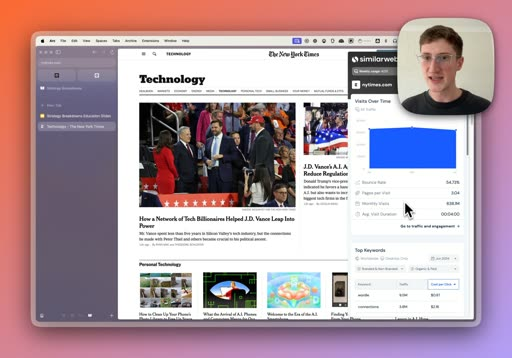
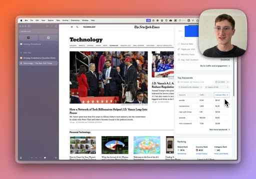
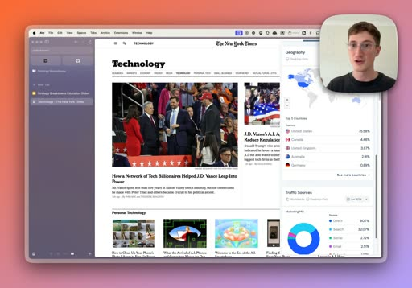
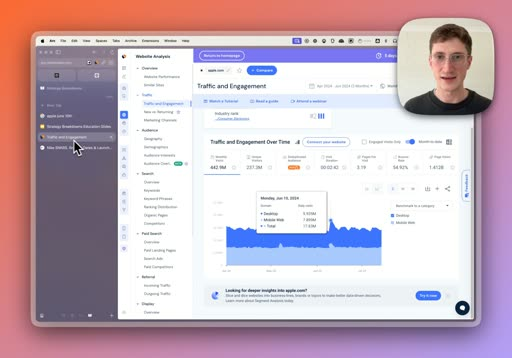

See any company's web traffic in seconds.
How to find out how much traffic any website gets, where it comes from, and what's actually working for them. With a free tool, no technical skills, and about ten minutes of setup.
Most strategy and growth problems come down to one question: how much traffic, and where does it come from? Once you can answer that for any website in seconds, you start seeing the internet differently. You land on a competitor, a prospect, a potential partner, and you can read their whole growth story off a sidebar.
Fair warning: it's addictive. You'll start checking the traffic on every site you visit.
SimilarWeb. Two parts, both usable for free. The SimilarWeb Chrome extension shows traffic stats in a sidebar on whatever site you're viewing (free tier, about 25 scans a week). The SimilarWeb platform goes deeper on a free trial. That's all you need.
Scan any site from the sidebar
Install the SimilarWeb Chrome extension, land on any website, and click the icon. A sidebar opens with the site's traffic at a glance, no leaving the page. Here it is on the New York Times.

Read it top to bottom:
- Monthly visits. The NYT pulls 640 to 685 million a month. Calibrate your gut: anything over a million a month is doing well in the startup world.
- Bounce rate. The share who hit one page and leave. 55% here, but paired with 3+ pages per visit it tells you a loyal cohort reads 10 to 15 pages and drags the average up.
- Pages per visit and average visit duration. Content sites run long (four minutes here), a SaaS marketing site runs short. The shape tells you the kind of business.
Read their top keywords
Scroll the sidebar and you get the keywords driving search traffic, with the cost-per-click next to each. This is the part people don't expect the free tool to do, and it's where the story is.

Look at the NYT's top five keywords: four of them are games. Wordle, Connections, Strands, Mini Crossword. In one glance you've learned something real about where their search traffic actually comes from, not the headline-news brand you assumed. The cost-per-click tells you how competitive and commercially valuable each term is.
See where the traffic comes from
Keep scrolling for geography and traffic sources. This is the bit that changes how you read a business.

- Direct is people typing the URL or using a bookmark. A high share usually means a strong brand (with a pinch of salt: blocked tracking also lands here).
- Search is organic plus those keywords you just saw.
- Social, email, referrals (backlinks from other sites) and display (programmatic ads). The mix is their playbook. If a competitor gets 40% from email, that's a signal to go sign up and reverse-engineer their sequence.
Go deeper: who their audience actually is
Open the SimilarWeb platform and you can compare sites side by side. Here's Nike vs Adidas on demographics and audience overlap.
Age and gender splits, and the killer one: audience overlap. 16% of Adidas visitors also browse Nike, but only 4% the other way, and Adidas's top "also visited" site is literally Nike.com. In two minutes you've built an evidence-backed case that Nike has the more loyal audience. That's the kind of line that wins an internal argument.
Reverse-engineer their best pages
In the platform's search and landing-pages views, you can see which specific pages and subfolders pull the most traffic for a site. Sort by clicks and their priorities show up: a sale page they're pushing, a product launch, the jobs page, a sub-brand. You're reading their marketing roadmap off their own traffic.
Spot spikes and what caused them
Drop to the daily view of traffic over time and the spikes jump out. Here's Apple, with a clear jump on June 10.

Search "Apple June 10" and you find their developer conference. Now you can tie events to traffic, and even estimate the incremental visits a launch or a campaign drove. Do this on your own launches and you've got a measurement habit most teams never build.
Where this actually pays off
It looks like an SEO trick. It's much broader than that. A few ways to use it the moment you've got it:
Competitor research
Read a rival's channel mix and top pages, find the channel that's working, and go emulate it.
Closing deals
Before a call, pull the prospect's traffic and context so you walk in already understanding their business. It shows.
Finding partners
Filter for sites with complementary audiences, low bounce and long visits, then build the partnership case on real numbers.
Content research
See what's pulling traffic in your space and what people who read X also read, then write into the gap.
Internal strategy memos
Stop saying "I think" and start saying "here's the data." Traffic evidence makes a strategic bet hard to argue with.
This is one tool. The system is the edge.
I write up tactics like this every week, the practical AI and growth moves marketers can actually use. And I run a free live workshop where I build one with you on screen.
Get the newsletter See the free workshop